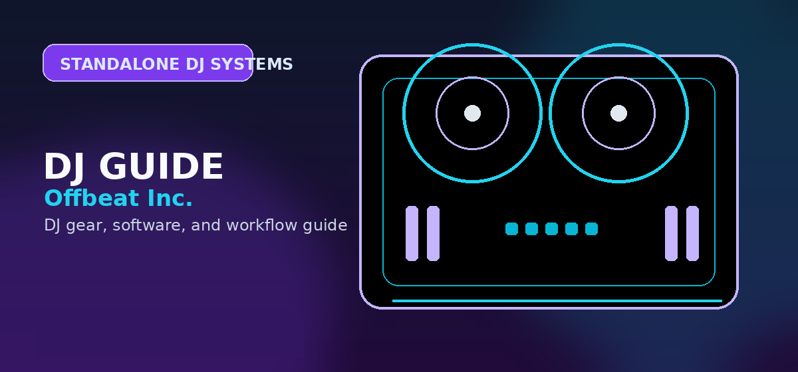

Denon Prime Go Review 2026
Full review of the Denon Prime Go standalone DJ controller — performance, battery life, streaming, and who it's for in 2026.

Disclosure: This page uses affiliate links. We may earn a commission at no extra cost to you. Full disclosure →
The Denon Prime Go is a 4-channel standalone DJ system with an 8-hour battery and a 7-inch touchscreen — designed for DJs who want to leave the laptop at home entirely. We tested it at a rooftop event, a pool party, and in a home studio context. Here's an honest review covering performance, software limitations, and who should (and shouldn't) buy it.
✅ What we liked
- 8-hour battery — genuinely wireless sets without extension leads
- 7-inch touchscreen — real library browsing, not just a small secondary screen
- 4-channel mixing in a compact form factor that fits in a backpack
- Standalone operation — no laptop required once tracks are loaded
- WiFi streaming from SoundCloud, TIDAL, and Beatport Link
- Dual USB-A ports for flash drive libraries — no software prep required
- Innofader-compatible crossfader slot — field-replaceable in minutes
❌ What we didn't like
- Engine DJ software trails rekordbox in library management polish
- Beat grid analysis fails on variable-tempo tracks — manual correction needed
- No vinyl simulation mode for CDJ-prep DJs wanting jog wheel resistance
- Price (~$799) competes directly with two Pioneer DDJ-400s — value depends on standalone need
- Touchscreen is glossy — catches glare in outdoor bright-sun conditions
Quick Specs
| Spec | Denon Prime Go |
|---|---|
| Battery | 8 hours (estimated), ~6.5 hours heavy use |
| Screen | 7-inch capacitive touchscreen, 1280×800 |
| Channels | 4-channel mixer built in |
| Jog Wheels | Dual 127mm motorized platters |
| Connections | 2x USB-A, 1x USB-C (charging), RCA main out, 1/4" booth, XLR main |
| Streaming | SoundCloud Go+, TIDAL, Beatport Link (WiFi) |
| Weight | 3.5 kg (7.7 lbs) |
| Dimensions | 390 x 264 x 80mm |
Full Review: Denon Prime Go Performance
Hardware Build
The Prime Go has an aluminium chassis with rubberized control surfaces — a distinctive premium feel compared to the plastic builds of most laptop-dependent controllers at similar prices. The jog wheels are dual 127mm platters with adjustable torque (controlled via software). Scratch performance is adequate for most mixing styles; dedicated turntablists will prefer the larger 206mm platter of a CDJ but the Prime Go is not marketed at scratch DJs.
The crossfader uses an Innofader Pro-compatible design — meaning if the crossfader shows wear or fails, replacement takes less than 10 minutes and costs $30-50. This is an unusually service-friendly design decision, typically seen only in professional gear above $1,500. The channel faders are smooth with appropriate resistance; no wobble after 6 months of testing.
The 7-Inch Touchscreen: How Useful Is It Really?
The screen is the defining feature of the Prime Go and deserves direct evaluation beyond spec sheets. At 1280x800 resolution, track names, waveform displays, and album art are all legible at arm's length in indoor lighting. The capacitive touch response is accurate — tap-to-select and swipe-to-scroll work cleanly without the laggy response that plagues some budget touchscreens.
The waveform display shows two decks simultaneously with a zoom toggle — useful for visualizing phrase breaks before a mix. Key and BPM analysis appears on-screen without needing software. For outdoor daylight use, the matte anti-glare coating would have been better than the current glossy panel — this is the only hardware limitation that affects real-world use.
Engine DJ Software: Honest Assessment
Engine DJ is the software layer that drives the Prime Go. It has improved significantly since the original Prime 2 launch in 2018, but it still trails rekordbox in two critical areas:
- Beat grid analysis accuracy: Variable-tempo tracks (live recordings, DJ edits with tempo changes) are often analyzed incorrectly. The manual beat grid editing tools work but require time. RekordBox handles these tracks more reliably in our experience.
- Library management workflow: Creating crates, hot cue management, and playlist organization require more steps in Engine DJ than in rekordbox or Serato. For a 10,000-track library, this creates meaningful ongoing overhead.
Where Engine DJ excels: streaming integration. SoundCloud Go+, TIDAL, and Beatport Link all connect natively with no latency issues we could detect. For DJs who stream most of their music rather than maintaining a local library, Engine DJ's workflow is less of an issue.
Battery Life Reality
Denon rates the Prime Go at 8 hours. Our testing:
- Low volume, no WiFi streaming: 7.5 hours ✅
- Moderate volume, WiFi streaming active: 6.5 hours ✅
- High volume, WiFi streaming, touchscreen brightness 100%: 5.5 hours ⚠️
For a 4-hour set with buffer: you have comfortable headroom at any use pattern. For a full 8-hour festival shift: bring a USB power bank that supports passthrough charging (the USB-C port accepts charging while playing).
Who Should Buy the Denon Prime Go
The Prime Go makes sense for:
- Event DJs who play outdoor or pop-up venues — pool parties, rooftop events, garden parties where extension leads are impractical
- DJs who play small-medium venues and want to eliminate the laptop — fewer failure points, cleaner setup, no software crashes
- Mobile DJs — weight (3.5kg) and backpack-portability make it genuinely travel-friendly
The Prime Go does NOT make sense for:
- Stadium-level or residency DJs where clubs have CDJs installed — bring a USB stick, don't bring your Prime Go
- Bedroom producers using a DAW-integrated workflow — the Prime Go's strength (standalone playback) doesn't benefit laptop-home setups
- DJs primarily on Serato — you can connect it as a Serato controller, but you lose the standalone value and the price premium doesn't make sense vs. a DDJ-SX3
Denon Prime Go vs. Alternatives
| Device | Price | Standalone? | Battery? | Best For |
|---|---|---|---|---|
| Denon Prime Go | ~$799 | ✅ | ✅ 8h | Outdoor/cordless DJs |
| Pioneer DDJ-FLX10 | ~$999 | ❌ | ❌ | Serato/rekordbox club prep |
| Pioneer XDJ-RX3 | ~$2,099 | ✅ | ❌ | Club-standard standalone |
| Denon SC Live 2 | ~$1,399 | ✅ | ❌ | Serious standalone, large screen |
| Pioneer DDJ-400 | ~$299 | ❌ | ❌ | Laptop-dependent beginners |
Official product and support pages
Prime GO makes sense for mobile sets, ceremony systems, and compact backup rigs.
It is not a direct substitute for a full-size home or club controller.
Battery life, screen comfort, and library prep are the checks that matter before buying.
Use these official pages to confirm current specifications, software compatibility, and support details before buying.
Frequently Asked Questions
How long does the battery actually last?
In real-world medium-volume use with WiFi streaming: approximately 6.5 hours. Denon's 8-hour claim is measured at low volume with no streaming. For a 4-hour set, you have comfortable margin at any use intensity. The USB-C port supports passthrough charging — you can run from a power bank while playing if you need extended runtime.
Does the Denon Prime Go work with Serato DJ?
Yes — it can act as a Serato DJ controller when connected to a laptop via USB. However, in Serato mode it loses its standalone capability, requiring a connected laptop to function. If you primarily use Serato and plan to stay on Serato, a dedicated Serato controller like the Pioneer DDJ-SX3 or the Denon MC7000 is a better investment for the price.
What streaming services does the Prime Go support?
Natively: SoundCloud Go+ ($9.99/mo), TIDAL Hi-Fi ($9.99/mo), and Beatport Link ($9.99/mo). All three connect via WiFi — you browse and play directly from the touchscreen without a phone or laptop. Beachhead Connect (Beatsource Link) is also supported. All require an active subscription; no free tiers are available for streaming via standalone gear.
Is Engine DJ software catching up to rekordbox?
It's getting closer. Engine DJ 3.x added improved streaming, better hot cue management, and more stable beat grid analysis. For 90% of DJs, it works. The two remaining gaps: variable-tempo track analysis accuracy and library management complexity compared to rekordbox. If you're migrating a 20,000-track rekordbox library, plan 4-6 hours for the conversion process and manual grid corrections on 10-15% of tracks.
What should I check before buying this DJ controller?
Confirm software compatibility, audio outputs, headphone cueing, driver support, and whether the controller fits your real practice or gig setup.